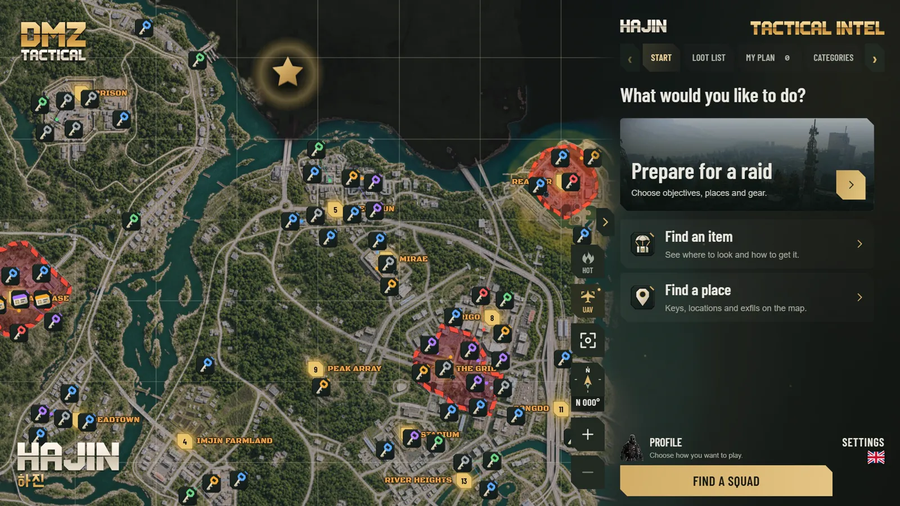

Hajin and X01 map with every key
A fast, zoomable map of Hajin and the X01 Exclusion Zone. It keeps working offline.
- Keys, locked doors and points of interest by rarity
- Locations, exfils, commanders and grid squares (for example B5 or F4)
- Hot Zones show where PvP fights are likely
- UAV mode gives an orbiting view of the map



![Roadmap to 1.0, drawn as a raid route on the Hajin map. 0.9.2 X01, in progress: X01 Black Site floor plans and a weapon builder. 0.9.3 Updates: every release tested as an update, a backup update notice and the Discord command /where. 0.9.4 Squad plans: share a raid plan with a code, and the next stop's grid square in F8. 0.9.5 Raid log: log your loot after a raid, and map changes after game updates. 0.9.6 Mac: first macOS test build. 0.9.7 Account: plans synced across PCs, squad search returns, report item spots. 0.9.8 Routes: suggested route for your items, first raid guide, gamepad support in F8. 0.9.9 Final testing on Windows and Mac, in English and Lithuanian. 1.0 Full release: Windows and Mac, complete Hajin and X01 maps. Ongoing: bug fixes, performance and quality of life. After 1.0: Android, iOS and web. Plans are subject to change.](assets/img/roadmap-mobile-en.webp)